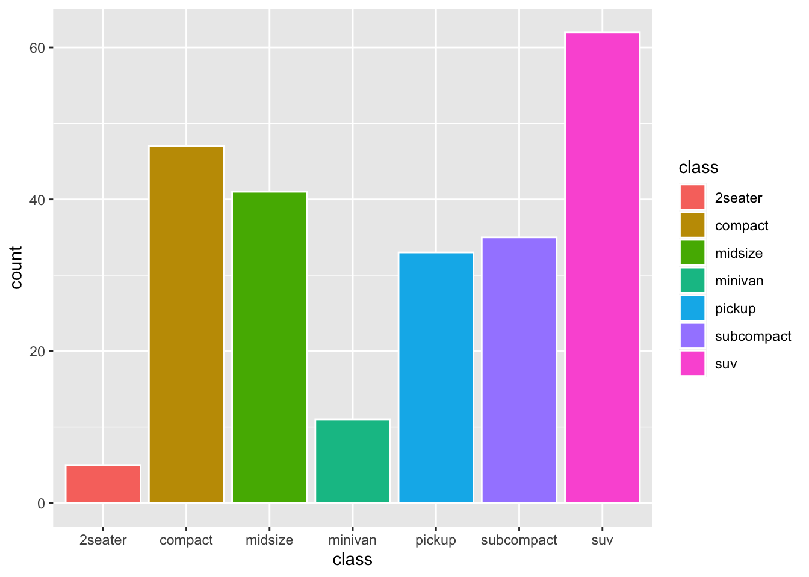
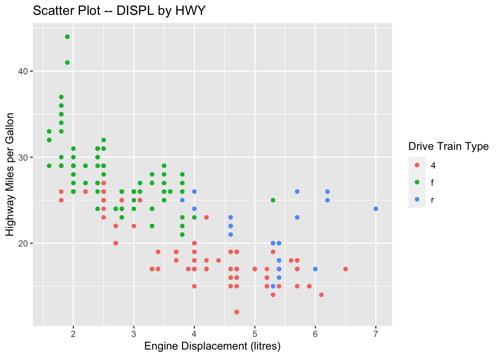

Chapter 11 Data Scientist First Step
Finally this chapter will demonstrate how you can make use of what you have learned from the previous chapters to perform a exploratory data analysis on the dataset you are interested in. Here we will look at a dataset of Nobel Laureates.
11.2 Before we start
Before we start, it is clear to see that the column names are full of spaces, which we would like to get rid off. So first, we remove all the spaces in the columns and replace them with _:
11.3 Data Completeness NA
It is always important to check if the information of each row is complete.
You can check rows with NA’s:
11.4 Hypotheses
When given a dataset, before you explore your data, you may first have some hypotheses in mind:
11.4.1 How many laureates were there in different discplines?
df %>%
count(Category) %>%
ggplot(aes(x = Category, y = n, fill = Category)) +
geom_col() +
geom_text(aes(label = n), vjust = -0.25) +
labs(title = "No. of Laureates in Different Disciplines", x = "Category", y = "N") +
theme(legend.position = "none")
df %>%
count(Category) %>%
ggplot(aes(x = fct_reorder(Category, n), y = n, fill = Category)) +
geom_col() +
geom_text(aes(label = n), vjust = -0.25) +
labs(title = "No. of Laureates in Different Disciplines", x = "Category", y = "N") +
theme(legend.position = "none")
An even more dynamic graph:
library(gganimate) #install.packages("gganimate", dependencies = T)
df %>%
count(Category) %>%
mutate(Category = fct_reorder(Category, n)) %>%
ggplot(aes(x = Category, y = n, fill = Category)) +
geom_text(aes(label = n), vjust = -0.25) +
geom_col()+
labs(title = "No. of Laureates in Different Disciplines", x = "Category", y = "N") +
theme(legend.position = "none") +
transition_states(Category) +
shadow_mark(past = TRUE)
11.4.2 Chinese Laureates
There are duplicate tokens in our dataset.
nobel_winners <- df %>%
mutate_if(is.character, tolower) %>% # lower all character vectors
distinct_at(vars(Full_Name, Year, Category), .keep_all = TRUE) %>%
mutate(Decade = 10 * (Year %/% 10),
Prize_Age = Year - lubridate::year(Birth_Date))
nobel_winnersCheck Chinese laureates again:
Create a subset of `nobel_winners`, which includes only winners who won the prizes more than once and in more than one category.11.5 At what age did these people receive the prizes?

nobel_winners %>%
filter(!is.na(Prize_Age)) %>%
ggplot(aes(x = Prize_Age, fill = Category, color = Category)) +
geom_density() +
facet_wrap(~Category) +
theme(legend.position = "none")
Exercise 11.4 Following Exercise 11.3, can you include the full names of states in the above table by adding another column?
In the demo-data directory, you can find a csv with the mapping between states abbreviations and their full names.
- The
US-states.csvdataset